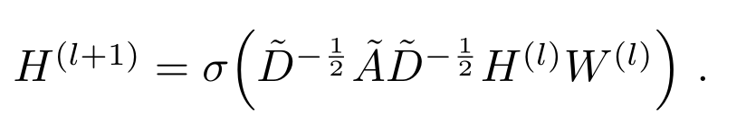

链接预测
链接预测
预测图中两个节点之间的边是否存在。
数据库选择：
- **CiteseerGraphDataset：**节点表示出版物，边表示引用关系。
- Nodes: 3327
- Edges: 9228
- Number of Classes: 6
- Node feature size: 3703
- CoauthorCSDataset：数据来源于2016年KDD Cup 挑战赛作者的合作图，节点是作者，如果他们共同编撰了一篇论文，则由一条边连接。节点特征表示每位作者论文的论文关键词，类别标签表示每位作者最活跃的研究领域。
- Nodes: 18,333
- Edges: 163,788
- Number of classes: 15
- Node feature size: 6,805
| Citeseer Grap | Coauthor CS | |
|---|---|---|
| Intro | 节点表示出版物，边表示引用关系，节点特征为出版物中单词出现情况 | 节点是作者，如果他们共同编撰了一篇论文，则由一条边连接，节点特征表示每位作者论文的论文关键词 |
| Nodes | 3327 | 18,333 |
| Edges | 9228 | 163,788 |
| Node feature size | 3703 | 6,805 |
数据处理：
任务为预测两个节点间边是否存在，因此数据处理过程如下：
- 将图中的每个边都视为正样本，其中10%为测试集
- 对不存在边的节点进行负采样，在训练集和测试集中采样相同数量的负样本。
- 将正样本和负样本都放入训练集和测试集
- 用任意一个二分类器对模型进行评价，然后计算Area Under Curve（AUC）
模型不断聚合节点及边特征，最后输出聚合所得节点特征，使用预测器为每条边预测分数。
模型选择：
-
GCNNet 图卷积神经网络
对于每个结点，考虑其所有邻居以及其自身所包含的特征信息。

-
GraphSAGE
不为每个节点训练单独的嵌入，而是学习一个函数，该函数通过从节点的本地邻域采样和聚合特征来生成嵌入。在训练时的，采样方式将GCN的全图采样优化到部分以节点为中心的邻居抽样。使得大规模图数据的分布式训练成为可能，并且使得网络可以学习没有见过的节点。
-
TAGNet
提供了一种系统的方法来设计一组固定大小的可学习过滤器来对图执行卷积。这些过滤器的拓扑在扫描图以执行卷积时自适应于图的拓扑。
将GCN中对卷积的简化做了部分还原，GCN模型是对卷积核进行Chebyshev多项式近似后取k=1，TAG将变量k保留下来作为超参：

-
GINNet
使用Weisfeiler-Lehman(WL) test 和同构图判定问题来评估GNN网络的表达能力，并提出了认为是GNN 类中最具表现力的GIN网络结构。

本博客所有文章除特别声明外，均采用 CC BY-NC-SA 4.0 许可协议。转载请注明来自 南风er的小窝！